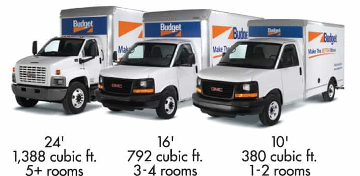
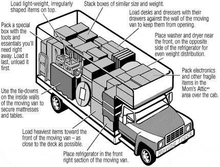

Luke Stranahan is an engineer by trade and an armed patriot by inclination. He writes for Return of Kings as a leisure pursuit and an attempt to do his part to help reverse the slide into moral decrepitude of modern society. Follow him on Twitter.


The world is a big place and sometimes you need to move to a different place than the one from which you started to pursue the life you want. With recently finishing a home renovation, it was time to put some furniture in the place, so I took an extended Thanksgiving holiday and hauled a truck full of stuff and a car on a trailer from where I grew up to my new home. If you want to move yourself, here’s a few things I learned that might be able to help.
U-Haul’s vans have a few more pimp options than other companies, but that is really things that don’t matter too much, like lower deck height and over-the-cab storage. They are, however, much pricier. I went with Budget Truck and got my van and trailer for half the price with unlimited mileage, which was nice as I took the extra days my thousand-mile journey mandated (I did it in 1.5 days, but they insisted I take it for 5 days) and did a bonus run from Grandma’s of some other stuff.

Too small a truck means you cannot pack everything. Too large a truck means worse fuel mileage, but, more importantly, the bigger the truck is, the worse it will drive, and the bigger spaces it will require to turn, park, and fit through. I took a 16-foot truck, put a lawn mower, a canoe, 5 bookshelves, three cabinets, a giant office desk, a TV, a couple carburetors and a stuffed deer head in it and nothing was stacked, meaning that there was floor for everything. Going 3D with height is how you use space; you don’t need a 24-footer unless you are moving a whole house.
I know, diesels are awesome. They are; but their fuel is not everywhere, and these vans are not semis. The van I drove was a newer GMC van conversion with about 120k on the clock, and it had enough power and brakes to do the job. Gasoline engines will do it for you, just make sure that the vehicle is not tired out already.
Going through the hills of northern Alabama required us to pick up speed on the downhills to avoid having to drop into second gear and 40 mph at the top of the uphills; we didn’t want to do that after smelling some oil burning the first time it happened, and this van was still pretty new.

I hauled an old Ford van up for a restoration project, and it was fairly heavy. Check the brakes, the tire pressure, the lights, the safety chains and the hitch, everything. If you don’t know how to hook it up, ask the company employees at your rental place, and look up things on the internet. These trailers get a LOT of use, and some abuse, and they can and will fail.

Load the moving truck in such a way that your items will not shift or fall over during the ride. Bias your thinking towards braking; you can control how fast you take off, and how hard you take turns, but you might have to lock that big rig up to avoid running over some illegal in a shitbox that just cut you off, so make sure stuff won’t go forward. There are rails on the sides screwed to the ribs of the truck that make great anchor points to tie back to and loop around the load so the rope is already pulled taut.
I made big use of saran-wrap style mover’s wrap; my stuff was from Walmart. It’s a bitch to do, but, between that and some old sheets, I didn’t get anything dinged. Don’t kill yourself loading; these vans have a loading ramp that pulls out that you should use, but you should definitely get help (I bribed my brother), and take breaks as often as you need. Lift properly, and take as much time as you need, because it’s better to be slightly late than injured and really late.

This van is a fairly normal sized vehicle, but it was at the max width of the ramps and just a little shy of the max of the trailer, so we lined it up really carefully, got it on, and left it there until the trip was done. Remember the primary rule of trailering; you need the load in front of the axles, not on them or behind. That means “engine forward.”
Although the trailer guide said we would have one with multiple chains, we got one with two latticed webbed nylon straps on winches for the front tires, and safety chains for the front and rear of the frame. We did bring extra straps, but didn’t end up using them, other than a small bright spot where a chain rubbed on a bump and the suspension bounced, there was no effect on the vehicle.
This trailer failed, but were the safety cables even hooked up?
Towing gurus say to check things in an increasing increment. Go to the end of your road, check everything. Go a few miles, check again. Go 20 or so, check again, then check each time you stop thereafter.
You want to check the straps and chains holding the vehicle down for tension and problems. If the car has not moved, that’s a good sign; mine did not move other than my straps got some slack in the rain during the overnight, and I ratcheted them down two clicks in the AM. Check tire condition and pressure. We rubbed a tire on a curb and gouged it while parking at an overnight hotel. I saw it, called the fleet service Budget contracted, and had a guy come replace the tire in the hotel lot the next morning. No muss, no fuss, but I saw that tire at night in a storm, and was able to maintain schedule because of proper vigilance, even though they may still try to give me the butt-sex on an extra bill here soon, I suspect.
Check your lights on the tow vehicle and the trailer. My running lights on the trailer did not work, and, although it was a very easy fix (the moving van uses spring clips to hold the pigtail’s connections in; just adjust the clip), we could have been running without running lights. Fire it up, get your moving buddy to stand back there, check brakes, hazards, turn signals, and running lights.
Don’t be this guy.
My moving van with a medium load and a heavy trailer and payload drove like a pig. Even though it was loaded properly, the combined 5500 lbs of the trailer made the van wallow a bit in steering, the brakes were functional but not impressive, and the merest suggestion of acceleration required at least one downshift. We cruised at 60, topped out at 65 a few times, and were the slowest thing on 7 interstates.
You can and will kill yourselves and others if you fuck up. These vans do not require commercial driver’s licenses, but they do require some sense. Leave plenty of room in front of you, take any corners really wide because of your trailer tracking inboard of you, and remember to slow down if in doubt, and never put yourself in a situation to have to back up.

Turn wide with a trailer
I GPSed the damn hotel and we still hit a tire on a curb. Know your route. Have your co-pilot have his map, and he should be telling you which lane to be in, and advising you about oncoming traffic to the right. Pack your lunches and coolers; the only time you should be getting off the road is to piss and stretch or get gas. Interstate rest stops are freebies; no traffic lights, no turns, and you can park in giant, pull through, semi truck spaces.
Truck stops are also awesome. You don’t need to use the semi-truck diesel side, but the car-gasoline pumps are usually laid out better as the places are bigger, plus they have nicer bathrooms and usually have fast food joints attached. Look for gas stations on the right of your route, and try to visually spot them before taking the exit so you ensure you will have easy turns and not much of a detour, respectively.
It’s dangerous to drive at night or in inclement weather or when you are overly tired in a big vehicle. Our first leg was 600 miles with a 5:30am start and a 8 pm stop with only stops for gas and bathrooms. The non-interstate portion slowed us down and rush hour in Birmingham is intense. We were tired, it was starting to rain, and it was hours after dark. Although we reaped the reward with more time to unload the next day, it was near the limit of what we should have done.
Make sure your insurance company covers moving vans or take the optional insurance.
Road trips with family and friends are always good, even though this vehicle was a pain. You can indeed move yourself for not much money, but it will be on your time, your back, and your gasoline. Everyone should drive a large vehicle, preferably towing something, at least once in their life to experience a whole new set of driving skills. I had done towing and moving before, but this was a good refresher. Be safe, slow down, and plan every turn way ahead of time.